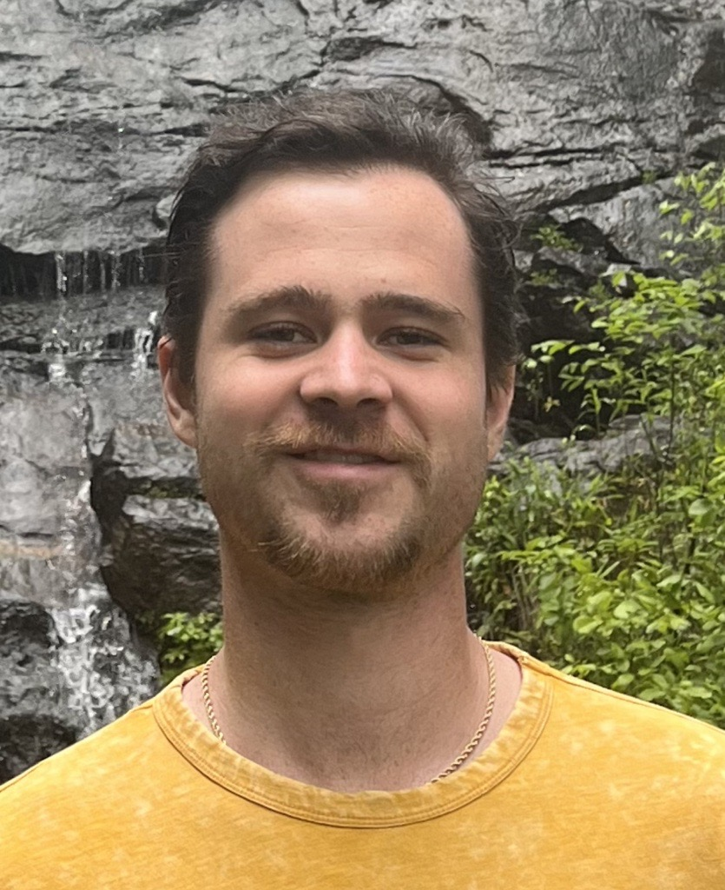

Members of the ART Lab
Principal Investigator
Dr. Robert Schlauch
My research interests focus broadly in understanding the role of individual differences in alcohol and drug use behavior. Specifically, I am interested in applying multidisciplinary approaches to the study of: a) processes associated with positive treatment outcomes, with a particular emphasis on craving and pretreatment change, b) risk factors for the development of substance use disorders (SUDs), including positive and negative reinforcement pathways to use, c) the interplay between substance use, comorbid disorders, personality, and aggression, including intimate partner violence, and d) the moderating role of individual difference variables in alcohol related disinhibited behaviors. Related to my work on craving, I am also interested (in collaboration with Dr. Diana Rancourt) in the applicability of craving as a transdiagnostic construct for disordered eating and compensatory behaviors. Secondary interests include methodological issues in clinical science broadly, and substance use research specifically.
Post-Doctoral Researchers
For more information, contact Dr. Schlauch.
Graduate Students
Brendan Walsh

Brendan grew up on Long Island, New York and completed his undergraduate studies at Binghamton University before moving down to Tampa. His research interests include social and emotional processes implicated in alcohol use disorder, with a particular focus on loneliness and affective experiences. Outside of graduate studies, he loves spending time at the beach, playing golf, and watching a good TV show.
Jared Davis

Before joining the ART lab, Jared competed a MA in experimental psychology at St. John’s University and enjoyed living and working in NYC. His research interests involve understanding individual difference factors in drinking and recovery. He is also interested in factors of well-being after treatment. Outside of the lab, he enjoys buying new plants, going to the beach, and reading a good book.
Undergraduate Students
- J.D. Dato
- Alex Ebbinghaus
- Ha Jin Park
- Elaine Sun
- Ivena Lavoile
Lab Alumni
- Emily Noyes, Ph.D.
- Jacob Levine, Ph.D.
- Becky Gius, Ph.D.